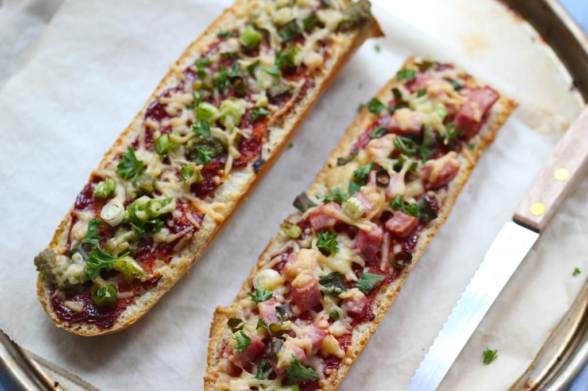

Pizza Stokbroodjes
Deze pizza stokbroodjes zijn een perfect voorgerecht met een rijke vulling.
Ingrediënten
· hamblokjes
· 2 eetlepels ketchup
· 2 theelepels tomatenpuree
· handje geraspte kaas
· 1 bosui
· stokbrood
Bereidingswijze
1. Verwarm je oven voor op 230 graden. Meng in een bakje de ketchup met de tomatenpuree.
Snijd het stokbrood horizontaal doormidden zodat je twee halve stokbroden hebt.
Besmeer de stokbroodjes met het tomatensausje.
2. Snijd de bosui in ringen. Beleg de stokbroodjes met bosui en hamblokjes.
Verdeel ook wat geraspte kaas over de pizzabroodjes. Eventueel kun je
de pizzabroodjes verder op smaak brengen met kruiden.
3. Zet de pizzabroodjes voor circa 15 minuten in de oven.
4. Klaar! Eet smakelijk.

Tip: Heerlijk op een bedje van rucola met dressing.